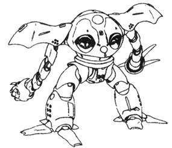

联邦篇：
RGM-79D 严寒用吉姆
简介
本机是以在寒冷地带作战用而开发的RGM-79型的派生型之一，也是RGM-79G的原型机，因为这个原因，头部及装甲板等部件是通用的。背部的推进器是根据初期生产型再设计的，因此性能上有所提高，战后的RGM-79C 吉姆改也采用了这种推进器。本机是一年战争时期联邦军陆军的吉姆型机体里远距离通信能力最优秀的机体，因此在连携作战时能充分发挥作用。由于是在寒冷地带作战的专用机，本机的防寒性能非常好，大战末期投入使用。
概要
机体番号： RGM-79D
机体代号(日文)： ジム寒冷地仕様 英文： GM Cold Climate Type 中文： 严寒用吉姆
出现作品： 机动战士高达 0080 口袋中的战争
机体类型： 寒冷地战用量产型MS
制造商： 地球联邦军
所属： 联邦
初次配备： U.C.0079
技术参数
内部环境： 标准式驾驶舱
尺寸： 头顶高：18.0米
全高：18.0米
重量： 本体重量：44.7吨
全备重量：58.7吨
装甲材料及结构： 钛合金（钛/陶瓷复合材料）
发电机出力： 1250KW
推进力： 15000KG×4=60000KG
姿势制御喷嘴:5
加速度： 1.02G
装备及设计特征： 传感器探测有效半径：5700米
180°姿势变换所需时间：1.6秒
固定武装： 头部60mm火神炮×2；光束军刀×1，额定输出功率0.38MW
选用武装： 专用盾牌
选用手部武器： 专用90mm机关枪
RGM-79G 指挥官用型吉姆
简介
本机是战后短时期内与RGM-179型一起成为联邦军主力MS的RGM-79C 吉姆改的原型机。本机的开发目的，主要是在重力环境下（指殖民卫星）维持治安，因此生产的台数不多；武装也以实体弹机枪为主，没有采用光学武器。
概要
机体番号： RGM-79G
机体代号(日文)： ジム·コマンド（コロニー戦仕様） 英文： GM Command 中文： 指挥官用型吉姆
出现作品： 机动战士高达 0080 口袋中的战争
机体类型： 殖民卫星防卫用量产型MS
制造商： 地球联邦军
所属： 联邦
初次配备： U.C.0079
技术参数
内部环境： 标准式驾驶舱
尺寸： 头顶高：18.0米
全高：18.0米
重量： 本体重量：43.5吨
全备重量：56.4吨
装甲材料及结构： 钛合金（钛/陶瓷复合材料）
发电机出力： 1330KW
推进力： 2×26500KG+2×7000KG=67000KG
姿势制御喷嘴数：10
加速度： 1.19G
地上速度：125千米/时
装备及设计特征： 传感器探测有效半径：6000米
180°姿势变换所需时间：2.4秒
固定武装： 头部60mm火神炮×2；光束军刀×2
选用武装： 专用盾牌
选用手部武器： 专用抽出式90mm机枪
RGM-79GS 宇宙战指挥官用型吉姆
简介
本机是对在殖民卫星内维持治安的RGM-79G型进行了改修之后得到的宇宙战式样的机体。本机换装了背包，总推力较RGM-79G提高了约10%。然而，设计时为了增加推进剂的搭载量，加紧了背包与机体本体的结合，使得机体内部空间大大减少，这不能不说是设计上的一大败笔，因此本机没有后继机出现。
概要
机体番号： RGM-79GS
机体代号(日文)： ジム·コマンド（宇宙戦仕様） 英文： GM Command Space Type 中文： 宇宙战指挥官用型吉姆
出现作品： 机动战士高达 0080 口袋中的战争
机体类型： 宇宙战用量产型MS
制造商： 地球联邦军
所属： 联邦
初次配备： U.C.0079
技术参数
内部环境： 标准式驾驶舱
尺寸： 头顶高：18.0米
全高：18.0米
重量： 本体重量：44.6吨
全备重量：76.5吨
装甲材料及结构： 钛合金（钛/陶瓷复合材料）
发电机出力： 1390KW
推进力： 2×21000KG+2×16000KG=74000KG
姿势制御喷嘴数：14
加速度： 0.97G
地上速度：120千米/时
装备及设计特征： 传感器探测有效半径：6000米
180°姿势变换所需时间：1.5秒
固定武装： 头部60mm火神炮×2；光束军刀×2
选用武装： 专用盾牌
选用手部武器： 光束枪
RGM-79SP 狙击型吉姆Ⅱ
简介
本机是为了弥补GM战斗力过低而专为优秀驾驶员所开发的机体，改进了发动机和装甲，使本机的综合性能大为提高，加设了提高瞄准性能的激光探测瞄准器、电子工学式高倍率摄像机，还装备了和RX-78-2 高达相同出力的光束枪，使战斗力大大提高。
概要
机体番号： RGM-79SP
机体代号(日文)： ジム·スナイパーⅡ 英文： GM Sniper Ⅱ 中文： 狙击型吉姆Ⅱ
出现作品： 机动战士高达 0080 口袋中的战争
机体类型： 狙击用试作型MS
制造商： 地球联邦军
所属： 联邦
初次配备： U.C.0079
技术参数
内部环境： 标准式驾驶舱
尺寸： 头顶高：18.0米
重量： 本体重量：45.0吨
全备重量：61.0吨
装甲材料及结构： 钛合金（钛/陶瓷复合材料）
发电机出力： 1390KW
推进力： 2×21000KG+4×15000KG=102000KG
姿势制御喷嘴数：8
加速度： 1.18G
地上速度：120千米/时
装备及设计特征： 传感器探测有效半径：8700米
180°姿势变换所需时间：1.3秒
固定武装： 光束军刀×2
选用武装： 头部火神荚舱；盾牌
选用手部武器： 大型光束步枪；狙击用步枪
RX-77D 量产型钢加农
简介
装备光束炮的RX-77-4型完成后，联邦军军方觉得此机的攻击力远高于RGC-80型机体，因此以RX-77各型为基础重新检讨了RX-77型的量产计划，本机即是因此项计划而诞生的量产机。本机设计时主要以RX-77-3为基础（RX-77-4造价太高，不适合量产化，只作为候补），调整了重量平衡，加厚了装甲，增强了火力和运动性。本机完成后为了进行战场试验，两机加入了预定参加所罗门攻略战的强袭扬陆舰灰色幽灵，在SIDE6遭受独眼巨人小队突袭时，为了援护RX-78 NT-1，在下降时被MS-18E 斗士击坠；另有一机则加入了澳洲的部队。因为这个原因，军部放弃了本机的量产计划，转而全力发展RGC系列，本机只生产了少数几台。
概要
机体番号： RX-77D
机体代号(日文)： 量産型ガンキャノン 英文： Guncannon Mass Production Type 中文： 量产型钢加农
出现作品： 机动战士高达 0080 口袋中的战争
机体类型： 中距离支援用量产型MS
制造商： 地球联邦军
所属： 联邦
初次配备： U.C.0079
技术参数
内部环境： 标准式驾驶舱
尺寸： 头顶高：17.5米
全高：18.1米
重量： 本体重量：51.0吨
全备重量：70.2吨
装甲材料及结构： 钛合金（钛/陶瓷复合材料）
发电机出力： 1410KW
推进力： 3×26500KG+2×7000KG=93500KG
姿势制御喷嘴数：5
加速度： 1.33G
地上速度：78千米/时
装备及设计特征： 传感器探测有效半径：7300米
180°姿势变换所需时间：2.1秒
固定武装： 光束军刀×2；头部60mm火神炮×2；肩部240mm（有资料为200mm）加农炮×2
选用武装：
选用手部武器： 90mm机枪
RX-78NT-1 高达艾利克斯
简介
若要评选GUNDAM中最具悲剧性色彩的机体，相信很多朋友会投上这架RX-78NT-1 ALEX一票。关于这架机体的来由、开发目的等一直众说纷纭：有人认为这架机体就是高达四号机或由高达四号机改修而来；但也有人持相反的意见，认为高达四号机与本机是各自独立的。在一年战争末期，由于阿姆罗·雷少尉驾驶RX-78-2 高达创造了辉煌的战果，使得RX-78系列计划本部在向联邦军参谋本部汇报时，引起了参谋本部联席会议对NT及开发NT专用机的高度重视。联邦军高层决定以RX-78系列的机体为基础，迅速开发或改修出NT专用机，以最大限度地发挥出NT驾驶员的能力。这样，大约在10月份，便决定了以V作战部队再编成的 G-4部队为主来开发本机，而驾驶员则由联邦宇宙军士官学校78年度首席毕业生克里斯蒂娜·马坎吉中尉担任。本机采用了一种新型的驾驶舱来代替了RX- 78系列最初所设计的核心系统：在驾驶员周围是一个360度的“全周天荧幕”，关于本机所有的控制都可以在驾驶员的“线性座位”上配备的一个面板上完成。这种控制系统给了驾驶员一个几乎无限制的视野，从而更容易发现目标。为了提高本机的近战能力，本机还在双腕各装备了一门90mm加特林炮。但从总体上讲，本机实在有负NT专用机之名，在吉恩军发动“红宝石作战”时被大破，修理完毕时一年战争已结束。
概要
机体番号： RX-78NT-1
机体代号(日文)： ガンダムアレックス 英文： Gundam "Alex" 中文： 高达艾利克斯
出现作品： 机动战士高达 0080 口袋中的战争
机体类型： NT专用试作型MS
制造商： 地球联邦军
所属： 联邦
初次配备： U.C.0079
技术参数
内部环境： 标准式全视野监控
尺寸： 头顶高：18.0米
全高：18.5米
重量： 本体重量：40.0吨
全备重量：72.5吨
装甲材料及结构： 月神钛合金（Lunar Titanium）
发电机出力： 1420KW
推进力： 2×35000KG+6×8000KG+2×7000KG=132000KG
姿势制御喷嘴数：19
加速度： 1.82G
地上速度：192千米/时
装备及设计特征： 传感器探测有效半径：5900米
180°姿势变换所需时间：0.8秒
固定武装： 头部60mm火神炮×2；光束军刀×2；腕部90mm加特林炮×2
选用武装： 专用盾牌
选用手部武器： 专用光束步枪
RX-78NT1-FA 全装甲高达艾利克斯
简介
本机是由RX-78NT-1 GUNDAM ALEX衍生而出的机体，属于泛用增加装甲装备型试作MS，为了提高机体的防御力而特地在RX-78NT-1 GUNDAM ALEX的基础上加装了乔巴姆（CHOBAM，Ceramic Hybrid Outer-shelled Brow up Act-on Materials的缩写，意为陶瓷复合外装爆发反应材质）装甲，使机体的重量大为增加。为了弥补这个缺陷，在装甲上装备了辅助推进器，但效果并不明显。提高了防御力的同时反而降低了运动性，可以说是得不偿失。
概要
机体番号： RX-78NT1-FA
机体代号(日文)： フルアーマーガンダムアレックス 英文： Full Armor Gundam "Alex" 中文： 全装甲高达艾利克斯
出现作品： 机动战士高达 0080 口袋中的战争
机体类型： 泛用增加装甲装备型试作MS
制造商： 地球联邦军
所属： 联邦
初次配备： U.C.0079
技术参数
内部环境： 标准式全视野监控
尺寸： 头顶高：18.0米
全高：18.5米
重量： 本体重量：50.0吨
全备重量：90.0吨
装甲材料及结构： 月神钛合金（Lunar Titanium）
发电机出力： 1420KW
推进力： 2×35000KG+6×8000KG+4×7000KG=146000KG
姿势制御喷嘴数：13
加速度： 1.83G
地上速度：192千米/时
装备及设计特征： 传感器探测有效半径：5900米
180°姿势变换所需时间：0.8秒
外置乔巴姆装甲
固定武装： 头部60mm火神炮×2；光束军刀×2；腕部90mm加特林炮×2
选用武装： 专用盾牌
选用手部武器： 专用光束步枪
吉翁篇
MS-06FZ 扎古Ⅱ改
简介
本机是吉恩军在实施了MS生产改进方案——“统合整备计划”后生产出的MS-06F型的改良型机体。由于MS-06F的部件可以与新型机种通用，因此获得了高水平的生产性与稳定性。FZ型改进了驾驶舱，增强了助推器，从而获得了比F型更灵活的运动性。但是，不可否认的是，助推器的大型化造成了推进剂消耗量的急剧增加，尽管增加了推进剂的装载总量，但是持续战斗时间还是减少到了原来的一半。驾驶过本机的人中，最为我们所熟悉的不是那些王牌驾驶员，而是在不知对方身份的情况下与恋人搏杀，最后英勇牺牲的巴纳德·瓦兹曼。
概要
机体番号： MS-06FZ
机体代号(日文)： ザクⅡ改 英文： ZakuⅡ Kai 中文： 扎古Ⅱ改
出现作品： 机动战士高达 0080 口袋中的战争
机体类型： 泛用量产型MS
制造商： 吉恩尼克公司
所属： 吉恩
初次配备： U.C.0079
技术参数
内部环境： 标准式驾驶舱
尺寸： 头顶高：17.5米
全高：18.0米
重量： 本体重量：56.2吨
全备重量：74.5吨
装甲材料及结构： 超高张力钢（超硬钢合金）、钛合金（钛/陶瓷复合材料）
发电机出力： 976KW
推进力： 3×24500KG+2×3000KG=79500KG
姿势制御喷嘴数：14
加速度： 1.07G
地上速度：103千米/时
装备及设计特征： 传感器探测有效半径：3200米
180°姿势变换所需时间：1.6秒
固定武装： 手雷×3
选用武装：
选用手部武器： 90mm扎古机枪；穿甲火箭弹；热能斧
吉翁篇：
MSM-03C 高战蟹
简介
一年战争后期，作为统合整备计划的一环，设计人员对MSM-03进行了再设计：改善了机体的水中航行形态、对驾驶舱也进行了改修、装备了水中用喷气背包，完成后的改修型机体被称为MSM-03C 高战蟹，看上去给人一种与MSM-03完全不同的印象。高战蟹有远凌驾于战蟹之上的陆上运动性能，再加上双手装备了高出力光束枪以及格斗战专用的巨大机械爪，使其在面对联邦军的主力MS——RGM-79 吉姆时具有压倒性的优势；只可惜配备到实战部队的时间太晚，在大局已定的情况下单靠优秀的MS自然无力回天。
概要
机体番号： MSM-03C
机体代号(日文)： ハイゴッグ 英文： Hygogg 中文： 高战蟹
出现作品： 机动战士高达 0080 口袋中的战争
机体类型： 水陆两用量产型MS
制造商： 兹玛德公司
所属： 吉恩
初次配备： U.C.0079
技术参数
内部环境： 标准式驾驶舱
尺寸： 头顶高：15.4米
全高：15.4米
重量： 本体重量：54.5吨
全备重量：79.2吨
基准排水量：253.0吨
装甲材料及结构： 超高张力钢（超硬钢合金）、钛合金（钛/陶瓷复合材料）
发电机出力： 2735KW
推进力： 2×38000KG+1×10000KG=86000KG
姿势制御喷嘴数：9
加速度： 1.09G
水中速度：89节
装备及设计特征：
固定武装： 腕部格斗用爪×2；腕部光束加农炮×2；掌部内藏式MEGA粒子炮×2；胸部鱼雷发射管×4
选用武装：
选用手部武器： 手持式导弹发射器


MS-14JG 狙击型勇士
简介
吉恩军为了调整多用途MS的生产线，尽量与其他机型共用一种部件或一条生产线，实施了名为“综合整备计划”的MS生产改善行动。MS-14JG就是这项计划中以MS-14F型为原型机所开发、生产出来的MS。和其他早期量产的MS-14系列机型相比，不仅该机的外观和构造有许多不同之处，设计思想也提高了一个等级。特别是大幅度加强了助推器的推力，发出的强大推力令其他MS望尘莫及。本机使用的光束步枪搭载的active laser发振器收束率极高，使射击精度大为提高，能进行高精度的远距离照准（其狙击精度在一年战争时期的MS中属顶级水准），非常适合狙击战使用，因此它又被称为“战场狩猎者” （“Jager”即“猎兵”之意）。由于该机是MS-14系列末期的机型，所以生产台数非常少。
概要
机体番号： MS-14JG
机体代号(日文)： ゲルググＪ 英文： Gelgoog Jager 中文： 狙击型勇士
出现作品： 机动战士高达 0080 口袋中的战争
机体类型： 泛用量产型MS
制造商： 吉恩尼克公司
所属： 吉恩
初次配备： U.C.0079
技术参数
内部环境： 标准式驾驶舱
尺寸： 全高：19.2米
头顶高：19.2米
重量： 本体重量：40.5吨
全备重量：80.3吨
装甲材料及结构： 超高张力钢（钛/陶瓷复合材料）
发电机出力： 1490KW
推进力： 3×24500KG+5×21000KG=178500KG
姿势制御喷嘴数：24
加速度： 2.22G
地上速度：192千米/时
装备及设计特征： 传感器探测有效半径：6300米
180°姿势变换所需时间：1.4秒
固定武装： 腕部110mm速射炮×2
选用武装：
选用手部武器： 大口径光束机枪；专用光束步枪
|
MS-18E 京宝梵
简介
曾在SIDE6突袭联邦军研究基地的“红宝石作战”中登场的MS-18E 斗士（“斗士”为意译，音译为“坎普法”或“京宝梵”，源出自德语），是除MSN-02 吉恩号之外整个吉恩军最后投入实战的MS。MS-18E 斗士是技术人员对YMS-18 试作型斗士进行改良后得到的强袭战专用试作型机体。为了突出“强袭”功能，技术人员对发电机进行了强化，各部位的装甲也略做了调整。为了最大限度地减轻重量以提高速度，本机只使用基本的武器，不携带预备用的武器，而且武器在使用之后可以随时舍弃；机体的头部加装了两门60mm火神炮，腰部裙甲下也有光束军刀可供使用，此外，试作型所使用的手枪也换成了更具破坏力的超级火箭炮。本机的性能极其出色，即使与联邦军的RX-78系列相比也毫不逊色。可惜的是，出现于正式记录上的本型机只有一架，由隶属于独眼巨人小队的米哈伊尔·卡明斯基少尉驾驶，在对RX-78 NT-1进行突袭作战时不幸战败被毁。
概要
机体番号： MS-18E
机体代号(日文)： ケンプファー 英文： Kampfer 中文： 斗士
出现作品： 机动战士高达 0080 口袋中的战争
机体类型： 强袭用试作型重MS
制造商： 吉恩尼克公司
所属： 吉恩
初次配备： U.C.0079
技术参数
内部环境： 标准式驾驶舱
尺寸： 头顶高：17.7米
重量： 本体重量：43.5吨
全备重量：78.5吨
装甲材料及结构： 超高张力钢（超硬钢合金）/钛合金（钛/陶瓷复合材料）
发电机出力： 1550KW
推进力： 2×28500KG+2×27000KG+4×12000KG=159000KG
姿势制御喷嘴数：16
加速度： 2.03G
地上速度：215千米/时
装备及设计特征： 传感器探测有效半径：6100米
180°姿势变换所需时间：1.2秒
固定武装： 头部60mm火神炮×2；光束军刀×2
选用武装：
选用手部武器： 穿甲火箭弹×2；超级火箭炮×2；专用霰弹枪×2
|